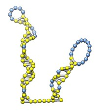
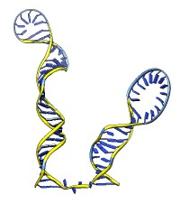
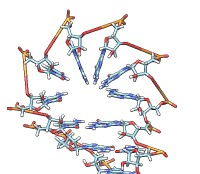
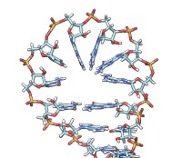
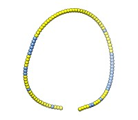
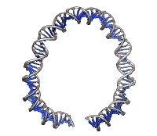

The rna command builds models of RNA or DNA molecules from secondary structure (base pairing) information. Nucleotides are layed out in a schematic way for stems and loops in 3 dimensions. This capability was used to make the 9000 nucleotide HIV virus RNA and DNA models used in an HIV virus animation. The operation can be:
Operation keywords and their sub-keywords described below can be truncated to unique strings, and their case does not matter. Synonyms for true: True, 1. Synonyms for false: False, 0. A vertical bar "|" designates mutually exclusive options, and default settings are indicated with bold.
• rna duplex path sequence [ startSequence i ] [ type DNA | RNADNA ]Creates an atomic model of double helical DNA or RNA-DNA hybrid with a specified sequence on one strand, the complementary sequence on the other strand and following a specified marker path where each marker represents one basepair. The path argument specifies a sequence of Volume Tracer markers such as that produced by the rna command path or smoothPath operations or atoms which give the center for each basepair. The sequence argument can be a string containing upper case letters AGCTU or a path to a FASTA file containing the desired sequence. The optional startSequence argument (default 1) specifies where to start in the specified sequence. The optional type argument can be DNA (default) or RNADNA to make a DNA double helix or a hybrid RNA/DNA double helix. Currently an RNA double helix is not supported.• rna minimizeBackbone molecule [ chunkSize c ] [ steps steps ] [ conjugateGradientSteps cgsteps ] [ updateInterval i ] [ nogui true | false ]Algorithm: Basepair atomic templates (no hydrogens) are placed along the path twisting by 36 degrees each basepair step. Currently the twist is not a settable parameter. The templates are based on PDB model 1BNA.
Energy minimizes the backbone of RNA or DNA molecules keeping the bases fixed. The minimization is done on chunkSize (default 10) consecutive residues at a time in order to speed up the calculation since different parts of the backbone usually do not interact with one another. This purpose is to fix long bonds and bad angles connecting residues in models built by layout of nucleotide templates for example by the rna command model or duplex operations. Minimization is done by the Chimera minimize command and the steps (default 100), conjugateGradientSteps (default 100), updateInterval (default 10), and nogui (default true) options are the same as the minimize command nsteps, cgsteps, interval, and nogui options.• rna model sequence [ path spec ] [ startSequence i ] [ pairs p ] [ length l ] [ circle true | false ] [ randomBranchTilt r ] [ loopColor color ] [ stemColor color ] [ name n ]
Creates an atomic model of single-strand RNA depicting the stems and loops with specified base pairs. The sequence argument specifies the nucleotide sequence as a string of upper case letters AGCUT or a path to a FASTA file. The model can use just a subsequence starting at a position specified by the optional startSequence argument (default 1). The path argument specifies a sequence of markers (e.g. #2) for the path for the RNA to follow and those markers. The markers must be created with the rna path command because there is a nucleotide orientation associated with each marker that is assigned by that command. An alternative to specifying the path argument is to specify the pairs argument which is the same as described for the rna path command. That will be used to compute a path using the rna path command and the optional arguments length, circle, and randomBranchTilt. The atomic model atoms and ribbon are colored according to the loopColor and stemColor values which can be a named color or red,green,blue or red,green,blue,opacity floating point values in the range 0 to 1. The name argument specifies the new atomic model's name (default "RNA").• rna path pairs [ length l ] [ circle true | false ] [ radius r ] [ randomBranchTilt r ] [ loopColor color ] [ stemColor color ] [ name n ]Algorithm: The path of the RNA is either precomputed with the rna path command or computed implicitly by the same algorith as described for the rna path command. That algorithm also assigns a base orientation for each marker. Atomic model templates for each base are placed on the markers with the computed orientation. The templates (file rna-templates.pdb in the RNALayout module) place base N9 atom of nucleotides A and G and base N1 atom of nucleotides C and U at the path marker position (template coordinate 0,0,0). The orientation of the nucleotides in stems are chosen to form hydrogen bonds for each basepair and in lobe-shaped loops they are stacked perpendicular to the plane of the lobe and extend toward the center line of the lobe or center of the semicircle that forms the lobe end.
Creates a path of markers, one marker per nucleotide, depicting the stems and loops of an RNA molecule using specified base pairs. Consecutive markers and basepaired markers are connected by links. The markers are the same as those made by the volume tracer tool. The base pairs are specified as triples of integers. For example 1,50,10 means that nucleotide 1 is basepaired to nucleotide 50, and that is the start of a 10 base pair stem, 2 and 49, 3 and 48, ... 10 and 41 are paired. Multiple stems are specified by giving additional triples, such as 1,50,10,60,70,2. The pairs argument can specify any number of stems each represented by 3 integers. There is a limitation that if a stem starts at 1,50 the no other stem can pair residues in the range 1-50 with residues outside that range. For instance 1,50,10,20,100,5 cannot be handled by the current layout code (may cause the code to hang or issue an error). The stems can be specified in a 3-column text file with one line per stem and the pairs argument can instead specify a file name instead of directly specifying a comma-separated list of numbers. Residue numbers start at 1. The last residue number is the highest number specified for a stem, or that can be overridden by specifying the length argument. The circle argument (default false) controls whether the RNA layout is in a circle from first to last residue or a straight line. The radius argument specifies the marker radius (default 2). The randomBranchTilt (default 0) is an angle in degrees that causes the code to randomly rotate stems and loops by an angle obtained by multiplying this value by a random number uniform distributed between -1 and 1. The loopColor and stemColor options specify the marker colors for unpaired and paired markers and can be specified as a color name or red,green,blue or red,green,blue,opacity floating point values in the range 0 to 1. The name argument gives the name of the resulting marker model (default "RNA path").• rna smoothPath path [ radius r ] [ spacing s ] [ kinkInterval ki ] [ kinkRadius kr ] [ name n ]Algorithm: The stem regions are twisted double helices rotating 36 degrees per basepair with basepairs spaced by 4 Angstroms along the helix axis with the markers for two paired nucleotides 9 Angstroms apart and the line between the two nucleotide markers perpendicular to the helix axis and 4 Angstroms away from that axis. Nucleotides that are not base paired are said to belong to loops. Markers for loop nucleotides are 5 Angstroms apart. The loops are laid out in lobes which are two parallel lines of nucleotides joined by a semi-circle of nucleotides at one end. The semi-circle contains 8 nucleotides and the straight segments contain a maximum of 10 nucleotides for each segment. If a loop has more than 28 nucleotides it is drawn as two side-by-side lobes. The RNA between the two nucleotides at the end of a stem forms a sequence of loops and stems and those are said to form a cycle. A cycle is laid out in a circle, meaning the bases of loops and bases of stems that make up a cycle lie on a planar circle. The loops and stems radiating from a circular cycle extend out in the plane of the circle unless the randomBranchTilt is non-zero in which case the tilt out of the plane of the circle with their base still on the circle. If the circle option if false then the top-level cycle is laid out in a straight line instead of a circle and each stem or lobe is rotated about the previous one by 145 degrees, in addition to the random branch tilt. Currently all these parameters are fixed in the code. They should be added as command arguments.
Creates a path of markers that is a smoothed version of a specified path. The smoothing assures a minimum radius of curvature specified by the radius parameter (default 50) and produces equi-spaced markers with spacing given by the spacing parameter (default 3.33). The original use for this was to create duplex DNA path that approximates a single strand RNA path without any sharp kinks. A different minimum radius of curvature given by kinkRadius can be applied every kinkInterval markers (default is no kinks). The intent of that option is to allow some sharper kinks in the path. The name argument specifies the name of the new marker model (default "smooth path").Algorithm: The first new marker is place at the first marker of the specified path. Subsequent markers are placed in the direction from the most recent new marker to the next input marker. If that direction would cause a bend with radius of curvature less than required as judged by the angle made by the last segment of the new path and the next segment then that angle is expanded so the radius of curvature is the minimum value (bend of 2*asin(spacing/2*radius)). The next marker is placed in this direction the specified distance away from the previous marker.
Here is an example of each of the rna operations illustrated on the first 100 nucleotides of HIV RNA with secondary structure described in
Architecture and secondary structure of an entire HIV-1 RNA genome.
Watts JM, Dang KK, Gorelick RJ, Leonard CW, Bess JW Jr, Swanstrom R, Burch CL, Weeks KM.
Nature. 2009 Aug 6;460(7256):711-6. PubMed 19661910.
and for a view of the full length HIV RNA model made with this command see this HIV virus animation.
|  |  |  |  |
| rna path pairings.txt length 100 | rna model hiv-pNL4-3.fasta #0 start 455 | Without minimization. | rna min #1 |
|  |  | ||
| rna smooth #0 | rna duplex #2 hiv-pNL4-3.fasta start 455 |
with base pairing file pairings.txt containing
1 57 3 5 54 11 17 43 5 25 38 4 58 104 8 67 94 3 70 90 4
and sequence file hiv-pNL4-3.fasta containing
>gi|296556482|gb|AF324493.2| HIV-1 vector pNL4-3, 1-9709 TGGAAGGGCTAATTTGGTCCCAAAAAAGACAAGAGATCCTTGATCTGTGGATCTACCACACACAAGGCTA CTTCCCTGATTGGCAGAACTACACACCAGGGCCAGGGATCAGATATCCACTGACCTTTGGATGGTGCTTC AAGTTAGTACCAGTTGAACCAGAGCAAGTAGAAGAGGCCAATGAAGGAGAGAACAACAGCTTGTTACACC CTATGAGCCAGCATGGGATGGAGGACCCGGAGGGAGAAGTATTAGTGTGGAAGTTTGACAGCCTCCTAGC ATTTCGTCACATGGCCCGAGAGCTGCATCCGGAGTACTACAAAGACTGCTGACATCGAGCTTTCTACAAG GGACTTTCCGCTGGGGACTTTCCAGGGAGGTGTGGCCTGGGCGGGACTGGGGAGTGGCGAGCCCTCAGAT GCTACATATAAGCAGCTGCTTTTTGCCTGTACTGGGTCTCTCTGGTTAGACCAGATCTGAGCCTGGGAGC TCTCTGGCTAACTAGGGAACCCACTGCTTAAGCCTCAATAAAGCTTGCCTTGAGTGCTCAAAGTAGTGTG